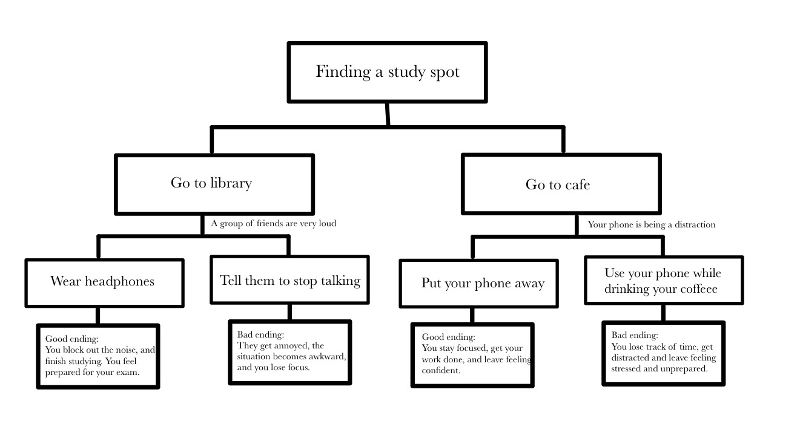
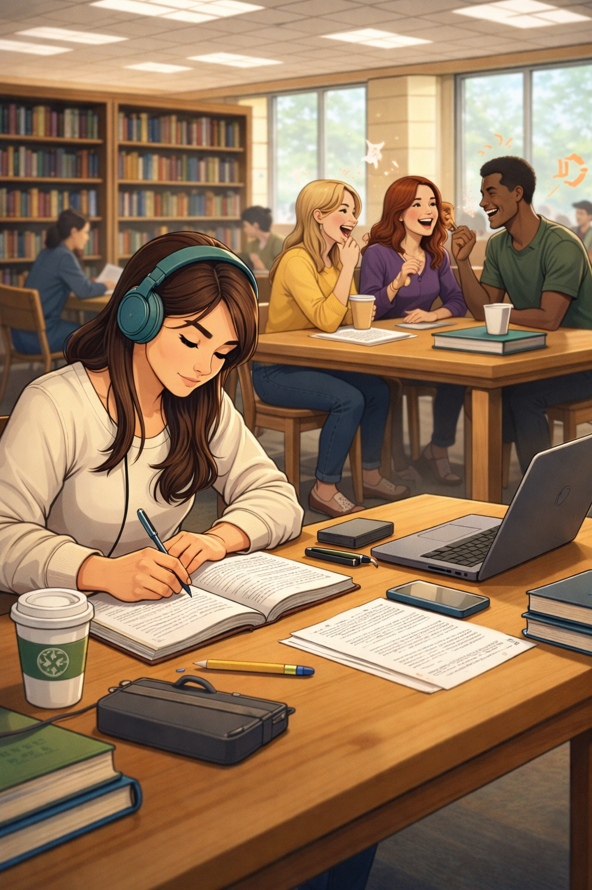

My interactive story takes place in everyday locations such as a library and a cafe, where students often go to study. The main character is a college student preparing for an important exam. The story follows the student as they leave thier house to look for a better study environment but are faced with different types of distractions in each setting.
As the story progresses, the user is given choices on how the student responds to these distractions, such as dealing with loud people or managing phone usage. These decisions affect whether the student is able to stay focused and complete their work or becomes distracted and unproductive. The story highlights how small everyday choices can impact success and outcomes. Below is the map of my story showing the branching paths and possible endings.  This image represents one possible setting from my story. Narrative Map
Scene Image